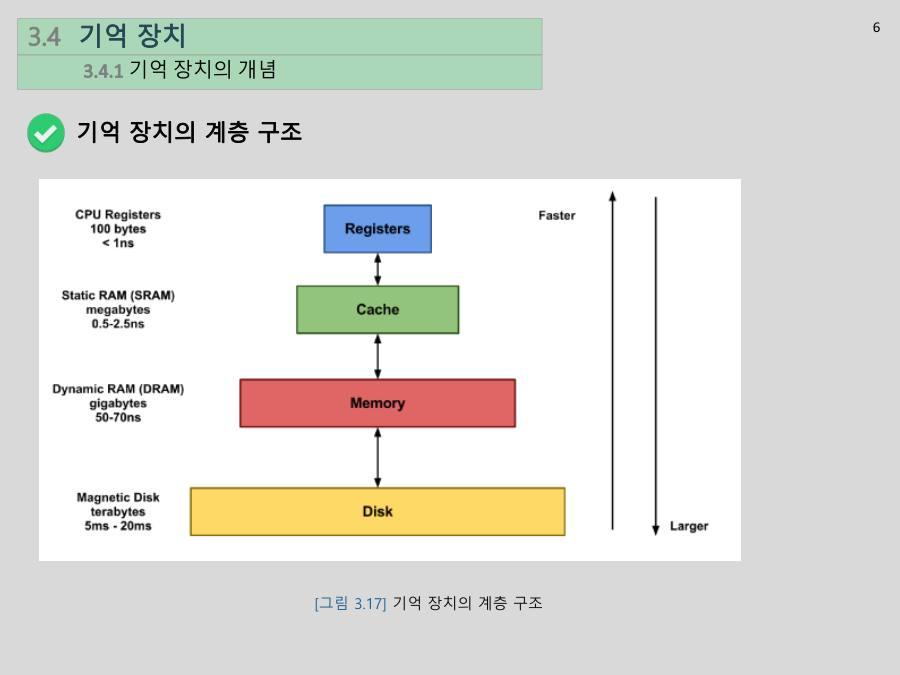
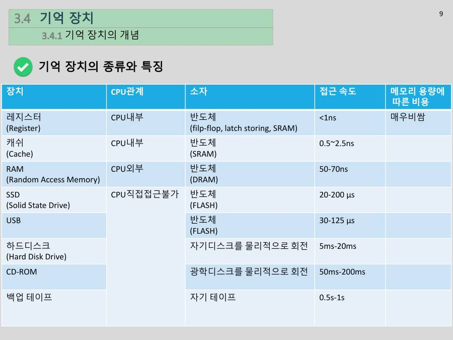

메모리 계층 구조 ★★★ 시험 필수
컴퓨터의 기억장치는 한 종류가 아니라 레지스터 → 캐시 → 주기억장치(RAM) → 보조기억장치(SSD/HDD) 4층으로 되어 있어요. 이것을 계층 구조(hierarchy)라고 해요. 위로 갈수록 빠르고, 작고, 비싸요.

| 장치 | 위치 | 소자 | 접근 속도 | 휘발성 |
|---|---|---|---|---|
| 레지스터 | CPU 안 | 플립플롭·래치·SRAM | 1ns 미만 | 휘발 |
| 캐시 | CPU 안 | SRAM | 0.5~2.5ns | 휘발 |
| RAM | CPU 밖 (별도 부품) | DRAM | 50~70ns | 휘발 |
| SSD | CPU가 직접 접근 불가 | 플래시 | 20~200µs | 비휘발 |
| USB | 플래시 | 30~125µs | 비휘발 | |
| HDD | 자기디스크를 물리적으로 회전 | 5~20ms | 비휘발 | |
| CD-ROM | 광학디스크를 물리적으로 회전 | 50~200ms | 비휘발 | |
| 백업 테이프 | 자기 테이프 | 0.5~1s | 비휘발 |

꼭 알아둘 세 가지예요.
- CPU 안에 있는 메모리는 2개 : 레지스터와 캐시. RAM과 SSD는 CPU 밖의 별도 부품이에요.
- 속도 순서 : 레지스터 > 캐시 > RAM > SSD(또는 HDD). 용량은 정반대예요.
- 휘발성 : RAM 이상(레지스터, 캐시, RAM)은 전원이 꺼지면 사라지고, SSD·HDD 같은 보조기억장치는 비휘발성(반영구)이에요.
왜 계층으로 나눌까요? 빠르면서 큰 메모리는 너무 비싸서 PC를 100~200만 원에 만들 수 없어요. 그래서 "자주 쓰는 소량은 빠른 곳에, 나머지는 느리고 싼 곳에"로 나눠서 값은 낮추고 속도는 높였어요. 교수님이 말한 이 장의 핵심 문장은 "속도가 빠르면 용량이 작고, 용량을 키우면 속도가 느려진다"예요.
중간고사 범위가 1~7주차 PDF 전체라고 해 봐요. 도서관(SSD)에 모든 자료가 있고, 이번 시험 범위 전체를 책장(RAM)에 꽂아 두고, 지금 공부하는 1주차 자료는 책상(캐시)에 펴 놓고, 지금 푸는 문제의 구체적인 개념은 노트(레지스터)에 적어요. 범위가 좁아질수록 빠르게 꺼내 쓸 수 있고 양은 줄어요.
속도 차이를 숫자로 느껴 보세요. 단위는 1ms = 1,000µs = 1,000,000ns예요. SSD의 20µs는 20,000ns이고 RAM이 50~70ns니까 SSD는 RAM보다 수백 배~수천 배 느려요. (20,000 ÷ 70 ≈ 290배, 200,000 ÷ 50 = 4,000배) 그래서 컴퓨터가 느려지는 병목은 주로 RAM과 SSD 사이에서 생겨요.
2023년 기출 Q8과 HW6 Q1~Q3은 이 표를 그대로 물었어요. 번호는 시험지마다 달라요. 기출은 1 RAM, 2 보조기억장치, 3 레지스터, 4 캐시였고 HW6는 1 레지스터, 2 캐시, 3 RAM, 4 보조기억장치였어요. 번호보다 이름의 순서로 외우세요.
| 질문 | 답 (이름) |
|---|---|
| CPU 안에 있는 메모리 2개 | 레지스터, 캐시 |
| 접근 속도가 빠른 순서 | 레지스터 → 캐시 → RAM → 보조기억장치 |
| 같은 가격 대비 용량이 큰 순서 | 보조기억장치 → RAM → 캐시 → 레지스터 |
다음은 Q8.4(HW6 Q4와 같은 문제)예요. "엑셀로 분기별 매출 자료 만들기"를 계층에 대응시키는 문제예요.
| 상황 | 답 | 이유 |
|---|---|---|
| 1) 엑셀 프로그램을 설치했다 | 보조기억장치 | 설치는 저장이에요. 도서관에 책을 들여놓는 일 |
| 2) 엑셀 아이콘을 더블클릭해 실행했다 | RAM | 실행하면 RAM에 적재돼요 |
| 3) "거래내역_2000_2020.xlsx" 파일을 불러왔다 | RAM | 파일의 데이터 전체가 RAM에 올라와요 |
| 4) 2020년 4/4분기 관련 주변부 데이터로 평균 계산 | 캐시 | 지금 계산에 쓸 부분과 그 주변은 캐시에 올라와요 |
| 5) 12/21 매출 170만과 12/22 매출 220만의 합을 계산 중 | 레지스터 | CPU가 직접 계산하는 값은 레지스터에 있어요 |
HW6 Q5 "메모리 계층 구조를 사용하는 이유"의 답은 이렇게 써요. 빠르고 용량이 큰 메모리는 너무 비싸서, 속도가 빠르고 용량이 작은 메모리와 속도가 느리고 용량이 큰 메모리를 단계적으로 배치해 정해진 가격 안에서 속도와 용량을 모두 확보하려고 해요. CPU의 계산 속도와 RAM·보조기억장치 속도 차이가 크다는 이유도 함께 써 주면 좋아요.
"레-캐-램-보" (레지스터, 캐시, 램, 보조)가 빠른 순서이고, 거꾸로 "보-램-캐-레"가 용량 큰 순서예요. CPU 안은 앞의 "레-캐" 두 개예요.
메모리 계층 구조는 레지스터, 캐시, 주기억장치(RAM), 보조기억장치로 이루어지며, 위로 갈수록 접근 속도가 빠르고 용량이 작으며 비트당 가격이 비싸다. CPU 내부에 있는 메모리는 레지스터와 캐시이다. 빠르고 용량이 큰 메모리는 가격이 매우 비싸기 때문에 제한된 비용으로 속도와 용량을 함께 확보하려고 계층 구조를 사용한다.
잠깐 확인 — 엑셀로 더하기 계산을 하는 중인 두 숫자는 어느 메모리에 있나요?
레지스터예요. CPU(ALU)가 직접 계산하는 값은 가장 빠른 레지스터에 올라와요.
화면을 가리고 "메모리 계층 구조 ★★★ 시험 필수"을(를) 친구에게 설명하듯 한 문장으로 말해 보세요. 막히면 위의 빨간 칸만 다시 보고 넘어가요.
자료: 6~7주차 · 06메모리와계층구조.pdf, 07보조기억장치.pdf(앞부분) · 빅데이터플06(6주차), 빅데이터플07(7주차)